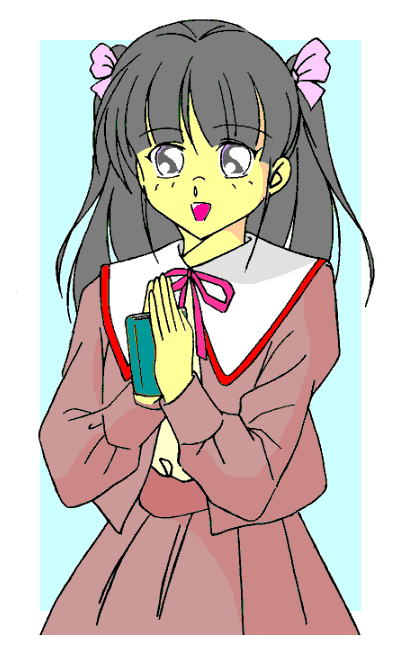

|
《身長／１５４ｃｍ。 体重／ナイショ。 スリーサイズ／Ｂ８０、Ｗ５６、Ｈ８３。 生年月日／１９××年２月１９日（１６歳）。 血液型／Ｏ型。 学歴／高校在学中。 好きな食べ物／ねぎとろ巻き、ハヤシライス、飲むヨーグルト。 嫌いな食べ物／パセリ、生のトマト。 休みの日の過ごし方／クッキーを焼きながらクラシック音楽鑑賞。 将来の夢／お嫁さんアイドル小説家。欲張りかな？》 「ま、こんなもんでいいかな」 「オレ……あたし、クラシックなんて聴きませんよ」 「いいの、イメージづくりのためならちょっとの嘘は許されるのよ」 「だけど、インタビューで『どんな曲が好きですか？』とか尋ねられたらどうするんですか」 「こう書いておけばファンがＣＤをプレゼントしてくれるでしょう。それで勉強しなさい」 「でも“高校在学中”はちょっとの嘘じゃすまないんじゃないですか？」 「嘘じゃなくせばいいでしょう。ろろみちゃん、あんたには高校に入ってもらいます」 「ええっ！？」 |
|
「何これ、どこを見てもろろみ、ろろみ、ろろみ！ あたしの大学入学記事が全然ないじゃないの！？」 「キレイな娘じゃん。ボクのいい相手になるかも。ウフッ」 「新作エッセイ集の紹介これだけ？ いい加減にしてよね、ろろみばっかり、もううんざり」 「こんな子とわたりあう自信ありません、わたしもう作家辞めます」 「うん、すごいよこの子！ まだまだ私も退くわけにはいかないわね。気合入れて新作書くぞーっ！」 「ろろみ……おもしろい名前ね。それに、なんか影がありそう。……興味あるわ」 「お友達になってほしいな、ろろみちゃん。そうしたら、あたしも元気になれるかも」 |
|
一夜明けたら、有名になっていた。 手垢の付いた表現かもしれない。けれども、今の微風ろろみの置かれた状況を端的に形容するには何よりのフレーズだろう。 優一郎のアパートで自分の本当の体と再会したろろみは、すぐにリンクアップ。伸一郎の体に戻って数時間寝てから、優一郎に連れられて特人研の実験室へと向かった。 扉を開けると同時に、ヤンヤの大歓声。 「やあシンくん、このたびは文学賞受賞、本当におめでとう」 「あっ、ど、どうも」 ついつい、教授の言葉につられてお礼を言ってしまう。 賞をもらったのは伸一郎ではなくろろみなのに。これからややこしい二重生活を迎えるにあたって、伸一郎としては、そのへんのケジメはしっかりつけておきたかったのである。 けれども、ろろみの正体を知る実験室のスタッフとしては、伸一郎を祝うのも当然なわけで。 「な、悪いことばかりじゃなかったろう。私の願望どおりじゃないか！」 願望。伸一郎にポータブルスプリッターを渡したときに、教授がつい口にした言葉だ。 「でも、まだ一千万円稼げるって決まったわけじゃありませんけどね」 「いやいや、ろろみちゃんのような女の子だったらすぐに稼げるさ。……ところで、ろろみちゃん、どこ？」 「まだスプリットしてませんけど」 「……ああ！？ そうだった」 こんな具合に先走った教授に限らず、実験室のスタッフはみな浮き足立っているようだ。 所定の手順として、伸一郎はスプリット前に身体検査を受けた。けれども、スタッフたちの対応はいつもよりおざなり。こんな検査はさっさと済ませて早く“ろろみちゃん”に逢いたい。そんな彼らのもどかしさが、レントゲン撮影機の向こうからひしひしと伝わってくる。 それでもトラブルなく身体検査が終わり、スタッフたちの見守る中で伸一郎はスプリッターを頭上にかざす。 「あらためまして、こんにちは、微風ろろみです」 「待ってました、我らのアイドルろろみちゃん！」 彼らは何度となく見ている伸一郎のスプリットシーンなのに、今回は拍手が湧いた。 「サインください！」 日ごろは物静かな助手が、『文藝計畫』誌を振り回しながらよく通るバリトンで叫ぶ。 もうひとりの伸一郎も、スタッフに混じってろろみにエールを送っていた。 実験体６６３号の少女は、実験室でもすっかり“ろろみちゃん”になっていたのである。 ろろみともうひとりの伸一郎の身体検査が終わり、再びリンクアップした伸一郎が優一郎たちと別れてひとりで地上に出てみると、まだ時刻は午前中だった。 電車に乗り込むと、あちこちからスポーツ新聞が目に飛び込んでくる。 『美少女作家で大騒動』『文壇また新アイドル』『吹き荒れる春の微風？』 そんな一面見出しが、伸一郎の胸中に微妙な細波を立てていた。 「すごいわね、ろろみって子。母さんもうパート休んじゃった」 伸一郎が帰宅してみると、ポテトチップスの袋を手にした母親が、テレビの前にどっかりと座り込んでいた。傍らにはスナックの空き袋がふた袋。朝からテレビに釘付けだったに違いない。もちろん見ている番組は、ろろみ一色のワイドショー。 『かわいくてかっこよくて、もうすっかりファンですよ。サイン会あったら絶対行きます。待っててね、ろろみちゃーん』 街頭インタビューらしい。スーツ姿の若い男性が、テレビカメラに向かって叫んでいる。 『ろろみって髪型ドンくさくない？ あんなの同い年ってあり？ けどさ、テレビで文句言ってたでしょ、あれマジ普通にすごかった。ちょっとは許せるかなって』 けらけらと笑いながら答えるのは、今風なチェックスカートの制服を着崩した茶髪の女子高生。 『最初、ふぅん、またアイドル作家ぁ？ って思いました。でも、テレビの会見みて、今までのアイドルさんとは違うな。何かおもしろいことやってくれるって、期待しちゃいました』 インタビュー場所が変わり、二十代の女優がコメントしている。 『気に入らんね、顔だけのジャリ作家を売らんがための商業主義。日本文学はまた一歩、いいや百歩くらい堕落したよ。そのうち赤ん坊か犬にでも文学賞とらせるんじゃないの？』 白髪の男が苦虫を噛み潰している。伸一郎には見覚えのある顔だったが、テロップの名前を見て納得。昨日別の番組で「やらせだ」と決め付けていた、あの評論家ではないか。 自説が半日で覆されてさぞ悔しかろうかと思いきや、全然懲りてないのである。 インタビュー画面にはまた若い女性が現れた。緑の黒髪をストレートに伸ばしたさまは、深窓の令嬢タイプというべきか。 テロップには「美少女作家 御堂山芽夢さん」とある。昨日、ろろみが何度も聞かされた名前のひとりだ——なにしろ、同業者になる人物なのだから。 『微風さんの作品……すごく内容が濃いって思います。……これで、十六歳ですか』 消え入るような口調ながらも、慎重に言葉を選びながら話す態度からは、なぜか威厳すらも漂う。さすが、昨年デビューでブレイク中のアイドル作家だけある。 続いて現れたのは、顔より先に胸の谷間に目がいきそうな、襟元の深いブラウスを着た女性。グラビアアイドルだろう。 『なんか恐い子が出てきちゃってびっくりですよ。わたしもうかうかしちゃいられないなあ。編集さんに急かされてるの、早く長編小説書けって。そんときはよろしく〜』 そうだ、グラビアアイドルながら作家活動を始めたっていうあの人ではないのか。 テロップに目をやると、果たして「タレント・作家 中島香子さん」とあった。 次なる女性は、ほんのり赤くカラーリングしたセミロングヘアがまぶしい。大きく開いた目と歯茎を見せない営業スマイルが、昔ながらのアイドルを思わせる。テロップにも「アイドル作家 珠橋せれ菜さん」。 『あたしの仲間っていうか、後輩が増えたみたいでうれしいですね。微風ろろみちゃんとは、小説でもルックスでも、いいライバルとして切磋琢磨していきたいです』 “アイドル作家の優等生”らしさがうかがえる、落ち着き払ったコメントぶり。 けれども、せれ菜の目は笑っていなかった。自分の居場所を奪われた不愉快さが、画面からも伝わってくる。 これからは、こういう人たちともわたりあわなくてはいけないのか。伸一郎の中の“ろろみ”が大きくため息をついた。 昨日のマスメディアの騒ぎぶりも恐いくらいだった。けれどもあれには、燃えるかどうかわからない代物に無理矢理燃料を撒いて焚きつけた、そんな強引さがあった。 しかし今日は違う。燃料なんてなくても勝手にどんどん炎熱が放たれる。 大衆の前に姿を現した微風ろろみが、より具体的に語られているのである。 番組のトピックが政局に切り替わると、母親はリモコンをテレビに向ける。すると、どこかで聞いたような声が唐突に。 『いいえ。後ろ向きの姿勢は捨てろって言ったの、正世さんのほうですよね！』 『いいえ』『いいえ』『いいえ』……。 こちらのチャンネルでは、昨日の会見でのろろみの名シーンが、何度も繰り返し流されているのだ。 思わず耳をふさごうとした。照れくさいというか、羽目を外しすぎた自己嫌悪というか、今の伸一郎にはとにかく恥ずかしい。 でも、少なくとも今こそは、そう思う必要なんてないはずだ。自分のしたことだけれども、この姿のしたことではない。今では他人の“微風ろろみさん”がしたことなんだ。 伸一郎は自分にそう言い聞かせながら、両手を耳から遠ざけた。 「ほんと、空恐ろしいくらい度胸がすわってますねえ、いまどきの十六歳って。だからあんなサディスティックな小説が書けるんでしょうね」 また、どこかのコメンテーターが、行き当たりばったりの解釈を垂れている。 『いんたぁふぇいす』のどこがサディスティック？ もっと過激な小説なんていっぱいあるだろうに。いまどきの十六歳の代表扱いされるのも腑に落ちない。中身は二十五だよ。 そのとき電話が鳴る。渋々母親がとる。が、すぐに声が明るくなる。 「……父さんからよ。『文藝計畫』、会社の近くの本屋で買えたって喜んでた。さあ今夜はじっくり読ませていただくわ」 どうやら父親までも、ろろみの虜になったらしい。 それから伸一郎はバイトに出かけた。今日は、歩いて十数分のコンビニへ。夜勤ではなく午後からの番なのだ。 店の控え室に入ると、四十台半ばの店長がにこやかに振り向く。 「あっ、店長、おはようございます」 「おはよう小出くん。微風ろろみって知ってるかい」 いきなりこれには驚いた。 「はい、名前くらいは」 生返事で話を合わせておく。まさか「俺が誰よりも知ってます」なんて答えるわけにはいくまい。 「へえ。君くらいの歳の男の子だったらもうちょっと興味持ってるかと思ったよ」 「私、テレビで見ましたよ。すごくしっかりした子ですよね」 話に割り入ったのはもうひとりの午後番、女子大生の鎌田さん。 「小出さん、もう少し最新の話題をキャッチするようにしたほうがいいですよ」 ついには、鎌田さんにまでそう言われてしまう始末。まあ、言わせておけばいいさ。 仕事場について間もなく、夕刊紙の第二刷が入荷する。新聞挿しに入れながらトップ見出しに目をやれば、やっぱりろろみの話題一色だ。『微風ろろみ 目撃談のない不思議』『連絡先明かされず 家出少女か』。「か」の文字が小さめなのはお約束である。 どうせ記事の内容なんてないに決まっている。伸一郎は自分にそう言い聞かせながら、仕事に集中するよう努めた。 「微風ろろみの記事が載った週刊誌ありますか？」 レジに立っていると若い男性客が尋ねてくる。けれども新聞ならともかく、昨日の今日で週刊誌に記事が出るはずがない。 「まだ印刷工場でしょうね」 機転を利かせたつもりでそう答えておいた。 別の男性客が新発売の洋菓子をレジに持ってくる。おっと、この商品は。 「お買い上げの方に、ただいま絵崎たるとマスコットの当たるスピードくじキャンペーン中です。一枚どうぞ」 伸一郎は条件反射的にそう発声しつつ、紙製のくじ箱をテーブルの上に取り出す。 そう、この洋菓子はアイドル作家の絵崎たるとがＣＭをやっていて、スピードくじで彼女を模した五十分の一スケールのマスコット人形が当たるのだ。 「あっ、四番の人形ですね」 レジの下からたるとマスコットを取り出していると、「かぶっちまった。オクにでも出すか」と客のつぶやき声。まあよくある反応だ。“オク”とはネットのオークションのことだろう。 しかし、伸一郎が商品とマスコットの入った袋を手渡したとき、客はまたつぶやいた。その客が店を出ると同時に伸一郎の口元は緩み、にんまりと不思議な笑みを浮かべてしまう。 目の前には、次の客が立っているのに。 「……あっ、失礼しました」 さっきの客は、「どうせだったらろろみちゃんモデルもほしいよな」と言っていたのである。 「小出さんも、やっぱり微風ろろみに興味あるんですね」 背後の整理をしていた鎌田さんが小声でささやいた。 |
|
そんなこんなはありながら、伸一郎はなんとか平常心を保ちつつ仕事をこなし、深夜番と交代して帰宅した。 明日は夜のシステム監視までバイトを入れていない。かといって暇なわけではない。昼間はろろみになって、もうひとりの伸一郎といっしょに編集部に顔を出す予定。その後は取材やらテレビの生放送出演やらが深夜までつまっている。バイトのほうはもうひとりの伸一郎に行かせればいい。 いよいよ“アイドル作家・微風ろろみ”の本格的なメディア露出が始まるのだ。 それに備えるためにも、“微風ろろみ”が世間からどう見られているのかはもっと予習しておかなくては。特に、マスメディア以外ではどういう反応なのかが気になる。 伸一郎は自室のパソコンでインターネットに接続し、有名な巨大掲示板群の文学関係板にアクセスしてみた。
なんだこりゃあ！？ 伸一郎は反射的に叫び声をあげそうになった。が、下で両親が寝ていることを思い出し、あわてて口を押さえる。 想像していたより、もっとすごかった。 ずらずらずらり。まるで蟻の行列のように——昔のだれかは数字の“３”が並んでいると喩えたそうだが、その代わりに——“微風ろろみ”の文字が次から次へと現れる。 本スレッドと思われる「微風ろろみスレッド」だけでも七スレ目に入っているようだ。書き込み数が千に達したスレッドはそれ以上書き込めない状態になるから、この一日半の間に六千以上の書き込みがあったことになる。 それに加えて、「ろろみたんハァハァ(;´Д｀)と叫ぶだけのスレ」だの「ろろみブームなんてどうせ一過性だと思う人の数」だのといった妙な関連スレッドや、おそらくろろみについても触れていそうな『文藝計畫』や榊正世編集長関係のスレッドの存在。読む前に、伸一郎は気が遠くなりそうだった。 そして気になるのはやっぱり「微風ろろみたんをムリヤリ犯したいスレ」。上に矢印型のカーソルを乗せてみる。けれども、さすがにこればかりはクリックできなかった。 いちばん古そうなスレッドをチェックしてみるとしよう。とりあえず、９１番の「微 風 ろ ろ み ！ ！」か。
果たしてここが第一報を伝えたようだ。初めは相手にされてなかったものの、「７」の書き込みを引き金に、怒涛の「ろろみ萌え」書き込みが押し寄せてきたのである。 全部まともに読んでいたらきりがない。画面をスクロールさせながら流し読みしていく。第一スレッド、第二スレッド……。昨日からのろろみ騒動が時系列を追うようにレポートされている。 第二スレッドは『文藝計畫』誌がどこで手に入るかでチャット状態、第三スレッドの途中ではろろみが計画書店に入ったことが伝えられ、第四スレッドでは記者会見の模様が実況されていた。 記者会見が終わった後は書き込みのペースも少し落ち着いたようだが、その分ろろみについての勝手な憶測が飛び交うようになる。 例えば、ろろみの釈明で終止符を打ったはずのやらせ疑惑についても、独断でいい加減なことが書かれているのだ。
ろろみ＝伸一郎の記憶でも、確かにあのときの記者は腕章なんてしていなかった。 さぞ辛辣なやらせ批判が書かれているのかと思いきや、てんで拍子抜けな内容に笑うばかり。まあ、放っておけばいずれ収まるだろう。 ほかにも気になるスレッドがあった。４９番「微風ろろみは僕の分身」だ。 まさか、生体スプリットの秘密について書かれているのではあるまいな。伸一郎は、ちょっとだけ身構えながらクリックしてみた。
読むに足らない駄スレのようだ。 というか、ここの掲示板にはこういう中身のないスレッドも多いらしい。 結局伸一郎は夜空が白むまで書き込みを読みふけっていた。けれどもその内容をここで書いているとそれだけで一話分の分量になりそうだから、あとは省略する。 | |||||
|
そして翌日の昼前、伸一郎は『文藝計畫』編集部へ行くために自宅を出た。 今日編集部に顔を出すことになっているのはろろみと伸一郎の両方。榊正世編集長が、伸一郎にろろみの保護者になってほしいと要請したのである。 ということで、伸一郎は駅へ向かう途中の公園のトイレに駆け込み、個室に鍵をかけてスプリット。ふたつに分かれた光の束から、ろろみともうひとりの伸一郎が現れる。 「あーあ、シートが汚れちまった。ちょっと床がきたないよなあ」 これが今日のろろみの第一声であった。 なお、スプリットのときのろろみの服装は、前回リンクアップしていたときに着ていたものが再生されるようになっている。つまり、この間の編集部帰りに着ていた、熊の絵柄つきのピンクのベストに白いブラウスである。ボトムは足首までのオレンジ色のパンツ。大きめの子供服ではあるけれど、春らしい淡い色が少しだけ大人っぽさを漂わせている。 「仕方ないさ。駅の障害者用トイレは改札の中だもの」 もうひとりの伸一郎——スプリット後の伸一郎ということで、特に明記する必要がある場合には「Ｓ伸一郎」と記そう。スプリット前の本来の伸一郎は「プレスプリット」ということで「Ｐ伸一郎」である——が、ろろみをなだめつつ銀色のシートを折りたたむ。 「あと、だれが聞いてるかわからないから、一応男言葉は控えてね、ろろみちゃん」 最後の「ろろみちゃん」だけは、外に響かないように無声音である。 「あっ、わかった」 ろろみはまだ気分がしっくりいかなかった。自分自身とこうして会話するなんて。 トイレを出ても、Ｓ伸一郎からは顔をそむけたまま。いっしょにいることくらいなら抵抗はなくなったものの。 もっとも、そのほうが周囲への目という意味では都合がよかった。 下手にろろみと伸一郎がべたべたと歩いたらどうだろう。時の人、微風ろろみに恋人か？ なんて憶測されて、格好のスキャンダルのネタだからである。 伸一郎が前を行き、その背中を見るように一、二メートルほど後ろをろろみが歩く。 背中を蹴るには少し距離があった。 「でも残念だなあ。俺のほうはろろ……君と歩いたって平気なんだけどなあ」 背後のろろみに、伸一郎が話しかけてくる。彼なりに言葉は慎重に選んでいるようだ。 「久美子に見つかったらどうするんだ？ 折角よりを戻したばかりだってのに。オ……あたしだって困るのよ」 「あっ、そうだな」 会話は止んだ。 人通りの多い駅前通りに出る。 ちょうど雲間から洩れた春の陽射しが、熱線となってろろみの半身を照らす。 けれどもそれ以上に強いのが、道を行き交う人々の視線。 「微風ろろみじゃないの」「へえ、この近くに住んでるんだ」「テレビで見たより小さいなあ」「前にいるのはだれなんだろう。家族かな、マネージャー？」「いや、それともコレか？」 そんなひそひそ声も、確実にろろみの耳に入ってくる。 伸一郎がガードしてはいるものの、自分が注目の的になっているというプレッシャーは間違いなくろろみに圧し掛かっていた。 しかし、それもある意味、ろろみにとって救いになっていたかもしれないのである。 ろろみには女性としての振る舞いの経験がほとんどない。例えば歩くときにしても、下手すれば男っぽい大股歩きになりかねない——前を行く伸一郎のように。そこに「いつも視線に曝されているんだ」という緊張感があるおかげで、自然と歩幅やピッチが控えめになり、あまり羽目を外した歩き方をせずにすんでいる。 とはいえ、そうすると必然的に伸一郎との間隔は広がりがちになるわけで。 伸一郎にもっとゆっくり歩いてもらいたい。ろろみは呼びかけようと口を開く。 ……だが、開いた口はそこで固まった。 ろろみには、もうひとりの自分にどう呼びかければいいのか、一瞬見当がつかなかったのである。自分自身を相手に二人称を使うのはなんだか落ち着かない。衆人が見ているところで「あなた」なんて、まるで夫婦みたいじゃないか。 「ねえ……シン」 「えっ？」 迷った末に結局、自分がＰ伸一郎として呼ばれ慣れていた呼び方を使った。それしか思いつかなかった。 Ｓ伸一郎のほうも、反応してくれたようだ。 「シン、もう少しゆっくり歩いてくれる？ はぐれそうだから」 「あっ、ごめん……って、なんだよ？ そのシンって呼び方」 「だって、ほかにいいのある？」 「……まあ、仕方ないか」 仕方ないのはこっちだって同じだ。 そんなやりとりをしながら駅へと向かうろろみと伸一郎を、人々は遠巻きに眺めるばかり。いちいち声をかけてくる者はいなかった。 この街では有名人を目にすることがときどきあるから、有名人だって同じ人間なんだ、迷惑をかけてはいけない、という公共心（？）も割と成熟しているのだろう。 駅に着く。伸一郎が券売機でふたり分の切符を買う。なぜか、ふたりの後ろに人は並ばない。かわりに両隣の列が妙に長くなる。 プラットフォームに立つ。やはり、ふたりの周りに、半径数メートルほどの不思議な無人地帯ができる。 電車が入ってくる。乗り込む。ふたりと同じ扉から乗る客はいない。 ふたりは扉の前に立つ。戸袋窓から外を見るろろみを、伸一郎のひと回り大きな身体が覆い隠す。 まるで車窓を流れる春景色のように平穏な空気。 しかし次の停車駅が近づき電車が減速を始めるとともに、その平穏は破られた。 「おい、微風ろろみがいるぞ！」 不意にだれかの叫び声があがる。 それをきっかけに、さっきまでろろみたちを避けるように遠ざかっていた群衆がささっと寄ってきた。 「ろろみちゃん！？」「すごいよホンモノだ！」「おい、なにがあったんだ？」 車内はさほど混んではいないのに、この車両の一角だけがラッシュアワーさながらの押し合い状態。 微風ろろみを見たくて集まった者ばかりではない。人だかりを見つけるととにかく中をのぞきこみたくなるような、典型的な野次馬タイプも多かった。 ろろみの周囲あちこちからランダムに、無数の電子音が鳴りわたる。ケータイの内蔵カメラだろう。 サインがほしいのか、ろろみの目の前にペンとメモ帳が差し出されてきたり。 中には手を伸ばして、ろろみの体に触ってこようとする奴もいる。必死でブロックする伸一郎が、逆にろろみから引き剥がされそうである。 「どけ、この男！ ろろみちゃんにベタベタするなよ」 「いてっ！」 だれかが伸一郎の手のひらを指でつねったようだ。 さっきの公共心とやらは、ひとりが引き金を引いただけでどこかへ吹き飛んでしまうのか。 そのとき、幸運なことに電車が停まった。そしてこれは幸運なのかわからないが、ろろみたちのいる側の扉が開く。 扉に押し付けられていたろろみと伸一郎の体は、戸袋に巻き込まれることはなかったものの、車両からこぼれ落ちるようにプラットフォームに放り出された。 「ひゃっ！」 「おっと！！」 ろろみは一瞬バランスを崩したものの、直後に伸一郎に腰から持ち上げられ、そのままプラットフォーム中ほどまで数メートル運ばれた。 ろろみと伸一郎に続くように、十数人の乗客が車外に押し出された。そのうち二、三人が、伸一郎に持ち運ばれるろろみを数歩ばかり追いかける。 しかし発車ベルが鳴ると、彼らも正気に戻ったかのように踵を返して、再び電車へと乗り込むのであった。 乗ってきた電車の最後の車両が走り去るのとほぼ同時に、ろろみと伸一郎も夢から醒めた。自分たちがどういう状態にあるのかを把握したのである。 「えっ？」 ろろみは少し真顔で下を向いた。 妙に高い視界、心もとない足元の感覚、そしてあのときの……！！ 自ずと体が震えてくる。口からは言葉にならない叫び声。 「う、うああああっ！」 「落ち着いてっ！」 伸一郎はふらつきながらろろみを地面に下ろす——けれども両腕はろろみの腰にまわしたままで。 「ふあああっっ！！」 腕を回し、腰をよじりながら、伸一郎を振り切ろうとするろろみ。 けれども「放してくれ」という言葉が出てこない。 車内でのパニック状態。そして、Ｓ伸一郎からの胴体タックル。 それらが引き金となって、ろろみとして“生まれた”ときの記憶が呼び起こされたのだ。 伸一郎のほうも、ろろみの胴体から手を放そうとしない。口ではろろみを静止するものの、内心はいい気分を味わっているように見える。 Ｓ伸一郎の“生まれた”直後の快感が蘇ったのだろうか。 「どうされました？」 ろろみの大声を聞きつけて、駅員がふたり寄ってきた。 あまり乗降客の多くない駅らしく、電車が去ってしまうとプラットフォームに人はまばらである。 「あ、こ、これはっ！」 本当に正気に戻った伸一郎が、ろろみから手を放す。 「な、なんでもないんです」 ろろみのほうも、スイッチが十六歳の少女に切り替わった。 「迷惑行為じゃないでしょうねえ？」 駅員のひとりが伸一郎をジロリとにらむ。 「大丈夫です。あたし、迷惑なんて受けてませんから」 ろろみは赤面しながら、自分には何も被害がないと強調した。 「そうなんです。お騒がせしました。どうもすみません」 「あたしからも、すみませんでした」 ふたりはそろって駅員たちにお辞儀する。 「それなら結構です」 駅員たちが去っていくのを見届けると、やっとろろみたちに安堵が訪れた。 「ろろみちゃん、すまなかった。俺さ、つい、うれしくて」 「わかってるさ」 自分自身の性格でもあるのだから。 「でも、できるだけ気をつけてくれよ。騒ぎはいやだからな」 「ああ」 伸一郎がゆっくりと歩き出す。ろろみは背後から小声でささやいた。 「……でも、守ってくれてありがとうな。シン」 「ところで今の女の子、どこかで見たことなかったか？ テレビだったかな、それとも新聞かで」 「そうだ、微風ろろみだよ！ アイドル作家の」 「ああ、やっぱり！ もったいない。わかっていれば、サインと握手くらい！」 駅員たちが詰め所でそう言っているとき、すでに伸一郎たちは駅舎の手洗いの中にいた。 「どうして気づかなかったんだろう。オレ、というか伸一郎のオレだけで移動したほうが安全じゃないか」 「あっ、そうだな。さすがろろみちゃん」 リンクアップすればいいじゃないか。 さっきのプラットフォームを歩いているとき、ろろみはそうひらめいていた。 そこで、だれもいないことを確かめて、男性用手洗いの個室にＳ伸一郎と飛び込み、このことを提案したのである。 「おまけに、電車賃もひとり分で済む」 「確かに」 「今日の分はもう仕方ないけどな」 安全策をとるならタクシーだろうがそれではさすがに財布がもたないからと電車にしたというのに、ふたり分払ってしまうなんて詰めが甘かった。 |
|
「小出伸一郎です。はじめまして……じゃないですね、お久しぶりです。微風ろろみの……遠い親戚にあたります」 「編集長の榊正世と申します。小出さん、きちんと名乗ってごあいさつするのははじめてですね。ろろみちゃんがいつもお世話になってます」 「いえこちらこそ、ろろみ共々どうかよろしくお願いします」 「あたしからも、シンをよろしくお願いしますね、正世さん」 電車で計画書店の最寄駅まで行ったＰ伸一郎は、多目的トイレでろろみとＳ伸一郎に再びスプリット。こうしてふたりは安全に編集部へとたどり着いた。 Ｓ伸一郎にとってははじめての『文藝計畫』編集部。びっくりしたのは、部屋に入ろうとしたとき、年輩の女性——母親のように見えた——に連れられた少女が、うつむいて泣きながらすれ違いに出て行ったことである。もっとも、この部屋に来た経験のあるろろみにしても、この少女の泣き顔にびっくりしたことに変わりはなかったが。 けれどもそんなことはお互い口にも出さず、正世編集長との三人での顔合わせは和やかに進んでいった。 伸一郎は、ろろみの「身元預り人」兼「遠い親戚」ということになっている。この部屋に入る直前に、ろろみとＳ伸一郎がそう打ち合わせて決めていた。ろろみの正体を明かさずに済み、それでいて社会的に理解されそうな関係といったら、こんなところが妥当だろう。 本当は、何よりも近い関係なのに。 正世にしても当然、ろろみには複雑で深刻な家庭の事情があると勘付いてはいる。 もしかしたら、ろろみは勘当されたなどで失踪届が出されておらず、警察にも知られていない家出少女かもしれない。だからこそ彼女は名前を言いたがらなかったのだろう。結局、微風ろろみという仮の名をつけることになったのだが。 ろろみが有名になりすぎたので、今更名乗り出ることができなくなった家族が、遠い親戚の伸一郎を保護者に仕立て上げたということもありえる。正世はそう憶測しているのだ。 というのは、ここ数日であれだけのろろみ騒動が起きたにもかかわらず、警察からはろろみの身元についてなんの問い合わせもなかったからである。 しかし正世には、当人たちを前にして、そんなことをほのめかすつもりはなかった。 アイドル作家としてろろみを売り出すのに、家庭の事情なんて無用と割り切っているためだ。家族についてのデータは非公表にしておけば、ファンたちが勝手にあれこれ想像してくれるだろう。今のままの“微風ろろみ”を、保護者の小出伸一郎と共に庇護していくこと。正世は、それが自分の役割だと考えているのである。 「それじゃろろみちゃん、受賞第一作お願いね」 「へっ？」 正世が唐突に話題を変えてきたので、ろろみと伸一郎はそろって目を丸くした。まるで同一人物のように。 「次号の『文藝計畫』に載せるやつ。あさってくらいまでにネーム出して、少なくとも十個。あっ、今度は短編でいいからね。二、三十枚くらいので」 「も、もう次の作品ですか？」 「当たり前でしょ。わたしはもう、ろろみは速筆だって見抜いてるんだから。こないだだって、あれだけの書き直しをひと晩でやっちゃえたじゃないの」 「それは、隣で正世さんが見てて……」 「関係ない。わたしが一昼夜見守り続けて一枚も進まない子だっていたのよ。そりゃアイドル作家も人それぞれで、遅筆だからダメってことはないけど、まめに作品を発表しなくちゃ忘れられちゃうものよね。小出さんにもお願いしますね、保護者としてしっかりろろみちゃんを応援してあげてください」 顔を見合わせるろろみと伸一郎。 「実を言うとね、さっきだって、ひとり『もう書けませーん』って泣き言言いながら、親御さん連れてあいさつに来た子がいたのよね」 正世の言葉にろろみの記憶がよみがえった。 さっきすれ違いに見た少女だろう。 「篠川由比子っていって、去年の計畫賞の二席だった子なんだけど、受賞作から一年間本当に何も書けなくてさ、いつも言い訳と愚痴ばかりで、とうとうこれ。きっと微風ろろみに恐れをなしたのよね。こちらのほうでも丁重にお引き取りいただいたよ、もう結構ですって」 ろろみには他人事ではなかった。自分だって、いつさっきの少女のような泣き顔になるかわからない。いや、二日前にそうなっていたかもしれないのだ。 もちろん、ろろみの場合は逃げ道がある。二度とろろみにスプリットせず、Ｐ伸一郎として生きればいい。 けれども、少なくとも今のろろみは、そしておそらくＳ伸一郎も、そんな後ろ向きの邪心なぞ微塵たりとも持ち合わせてはいなかった。 ただ真剣に、正世の話を受け止めていた。 「とにかく、一寸先は闇なのよ。ろろみ、あんたは無数の作家志望者の体を踏み台にしてるんだから。旬のアイドルってだけでものすごい追い風を受けているんだから、その風が止まないうちに、やることはどんどんやらなくちゃ。逃げることならいつでもできる。でもろろみだったらもう逃げないって信じてる。今年の計畫賞に二席三席はないのよ。受賞者はろろみひとりだけ。その重み、よく考えてね」 正世の熱弁を受けて、ろろみは自分の選んだ道の厳しさを思い知らされる。 けれども。 「実を言うと、受賞者ひとりだけにしたの、賞金の予算節約でもあるのよね」 思わぬ締めの言葉に、ろろみと伸一郎の顔から苦笑いがこぼれた。 「あっ小出さんですね、はじめまして。副編の原島明典です。ろろみちゃんもお疲れ様」 部屋の扉が開いて、大きな紙袋をいくつも抱えた原島が現れた。 「編集長、ろろみちゃんへのレターの整理、ひとまず終わりました」 「うん、ごくろうさん。暇があったら原島くんもこちらの話にまざらない？」 「ええ、よろこんで」 かくして、原島をまじえた四人の話題はろろみへのファンレターへと移っていった。 原島の座る椅子の脇には、封筒や葉書でパンパンに膨らんだ手提げの紙袋がふたつ。これが数百通の手紙になるのだという。さらに別のふたつの紙袋には、宅配便で届いただろう箱がいくつも詰められていた。 これがろろみ騒動からわずか二日で届いたものである。つまり、まだこれからどんどん増えるのだろう。 「ろろみちゃんとファンのみなさんには失礼だとわかってますけれど、レターはすべて、安全のためにこちらで開封してあります。カミソリとかいった不審物が入ってないものだけこちらに持ってきましたので、あとでお渡ししますね」 それでも、ろろみには到底全部目を通せそうに思えなかった。 「ほとんどは内容なんてないんだから。ろろみたんハァハァって書いてあるだけとか、ちゃちな似顔絵が書いてあるだけとか」 正世がそう言ってろろみをからかう。 確かに、まだ数日しか経ってないのだから、ろろみの性格や作品を深く考察したレターがたくさん来るとも思えない。 「それと、こちらの箱は食べ物の差し入れです。ほかにもたくさんあったのですけれど、生ものや開封されたもの、手作りのものはすべて廃棄処分させていただきました」 ほかにも食べ物があったのかと考えると、ちょっともったいない、とも思ってみたり。 「そして僕からも一通、どうかよろしく」 原島はそう言いながら、水色の封筒をろろみに直接差し出した。 「こら原島」 正世の喝が飛ぶ。けれども、ろろみはにっこり笑って原島の封筒を受け取った。 そんなおしゃべりの中で、ろろみには気がついたことがあった。 正世や原島たち他人がいるときには、Ｓ伸一郎の顔を見ても平気なことに。 きっと自分は、もうひとりの自分とふたりっきりで向き合うことが怖いのだろう。 そしてさらに気がついた。こうした思いも、将来自分が書くかもしれない作品にフィードバックできるかもしれない。それが次回作かどうかはともかくとして。 異性スプリットとリンクアップを繰り返す自分の希有な体験を、それとわからぬように作品へ昇華させていきたい。ろろみは、そんなほのかな希望を抱くのであった。 |
|
話題はいつしか、ろろみのプロフィールの打ち合わせへと移っていった。 「文芸誌に載ってる作家のプロフィールって、堅めのものが多いですよね」 原島が他社の雑誌を開いてろろみたちに見せてきた。
《 珠橋せれ菜（たまはし せれな）。１９××年１０月６日、○○県生まれ。１９歳。２００×年『少年少女少年』で新星文學大賞を最年少の１８歳５ヶ月で受賞。同作でジャパン文学新人賞、ふみひめ奨励賞も受賞し、日本純文学大賞候補に選ばれる。写真集『Ｓｅｒｅｎｉｔｙ』やテレビ・ラジオでも活躍中。この４月より洋陵大学に通う。》 確かに、アイドル作家と呼ばれる作家でも、プロフィールは主に経歴を並べた地味なものだ。まあ、文芸誌の本来の読者層を考えれば当然なのだろう。 「そこで、ろろみちゃんにはもっとアイドルらしいプロフィールをつけたいんですよ」 原島は、今度はアイドル雑誌を開いて見せる。 そちらのプロフィールには、スリーサイズに始まり、趣味や好きな食べ物、好みの場所や将来の夢など、アイドルたちのキャラクターが目に浮かぶような項目が並んでいた。雑誌や読者の傾向が変わるとこうも違うのだろうか。 中島香子のグラビアページもあって彼女のプロフィールが載っていたが、文芸誌とはうって変わって項目も柔らかめで、両親の名前なんてかけらもない。 「どうです？ ろろみちゃん……微風先生か。でも呼びづらいなあ」 少し口ごもっている原島に、正世が助け舟を出す。 「原島、あんたもろろみちゃんって呼べばいいじゃん。ね、ろろみもＯＫでしょう？」 「ええ、正世さん」 「じゃあろろみちゃん、アイドルって感じで紹介されたい？ それとも、普通の文芸誌のようなのがいいかな？」 「あっ、えーと……」 ろろみの本心からいえば、実はどちらでもよかった。 紹介されるのがＰ伸一郎だったら文芸誌らしいプロフィールを選んでいただろう。ろろみとしても、敢えて「小説家！」と言わんばかりの堅い紹介文を出してもらうのも実体のろろみとのギャップがあって楽しそうだな、という考えもある。 けれどもここは、原島の意を、そしておそらく彼の背後にいる無数のろろみファンの意を汲んでやりたかった。今の自分にふさわしい呼び名は、やっぱり「微風先生」よりは「ろろみちゃん」なのだろう。だったらプロフィールも、それらしく合わせたほうがよいのではないか。 「あたしでしたら、アイドル風のほうでお願いします。シンは？」 「ろろみちゃんがいいって言うなら、それで結構ですよ」 「編集長はいかがですか？」 「そうね。お行儀ばかり気にするのはよしましょう。原島くんの案、採用します」 かくして、ろろみ当人を交えての、ろろみの“キャラクター設定”会議が開幕したのである。 「はかなげでおとなしい少女。この基本コンセプトは小出さんもいいよね」 「ええ、わかりやすくていいですね」 「それに、怒らせると怖いっていう一文をつけてくれればいいかな」 原島が笑い声で言うと、伸一郎も男どうしでうなずく。 直後、伸一郎の表情がしかめっ面に変わり、隣りに座ったろろみが神妙に咳払いをする。 「確かに怖いかも。……でもわざわざ書くことじゃないね。やめときましょ」 伸一郎が靴を脱いで足を摩るのを斜めに見つつ、正世はろろみをなだめるように言った。 「じゃあ、ろろみはブラコンタイプっていうのはどうかな。小出さんが最初に迎えに来てくれたとき、頼りたげにすがりついてたじゃないの？」 「正世さん、あれはあのときだけの特別。本当に心細かったんだもの」 ろろみはきっぱり言い張った。正世にうなずこうとする伸一郎を横目で牽制しながら。 「でもまあ小出さんは、ろろみちゃんにとってお兄さんみたいなものだよねえ？」 「まあ、シンは年上だけどね」 そもそもＰ伸一郎は兄という立場を実感としてよくわかっていないのである——兄を持つ側としても、持たれる側としても。優一郎は弟ではあるけれど双子で同い年。血のつながった幼なじみのようなものだ。 ろろみにとってだれよりも身近でだれよりも大切なのに、だれよりも厄介なＳ伸一郎。自分がこの人物を兄のように見ることはあるのだろうか。それは程遠いのではないか。ましてや、さらに別の立場の、いとしい異性として見ることなんて……。 「ろろみちゃん、何赤くなってるの」 正世の声にハッとなる。いけないいけない。いつの間にか、少女のろろみとしての思索に耽っているとは。 隣りのＳ伸一郎は、ぼんやりと明後日な方向を眺めている。幸せなものだ。 「アイドルをつくって売り出す側としてみれば、キャラがわかりやすいほうがいいのよね。それにキャラが被るのはあまりうれしくないわけ。メジャーなアイドル作家を考えてごらん。各務菜穂と御堂山芽夢がお姉さんタイプで、絵崎たるとは妹タイプよね」 ろろみは彼女たちを写真でしか見たことがない——たるとをサイン会でちらりと見たことはあるが、あれは直接見たうちには入らないだろう——とはいえ、それでも正世の言うタイプについてはおおよそ納得がいった。 「で、中島香子と珠橋せれ菜あたりが中間タイプってとこですかね、編集長」 「原島、わたしの言いたかったセリフとらないでよ。ま、中間なんてナシでさ、せれ菜が妹で香子は姉じゃないかって気もするけど……どっちにしたって、各タイプの定員が同じとすれば、必然的にろろみのポジションは妹タイプに決まるね」 Ｐ伸一郎としての記憶がろろみの脳裏に浮かんできた。そういえば、アイドル好きだった優一郎が昔言っていたはずだ。「アイドルの○○ちゃんは姉タイプだけど××ちゃんは妹だよな」と。 姉タイプとか妹タイプとか無理矢理枠にはめられてしまうことには、まだ抵抗があった。けれども、原島ならびにろろみファンたちの意は汲んでやりたかったし、だいいち隣りのＳ伸一郎も正世たちの言葉にウンウンとうなずいているのだ。 考えてみればそもそもの自分、Ｐ伸一郎だって妹タイプ好みじゃないか。だから久美子とつきあっているわけで。好みの傾向が受け継がれていることに気がついて、なぜかほっとするろろみであった。 「わかりました。妹タイプってことでいいです」 そう口に出してみると、胸の奥につかえていたものが流れ去ったように思えた。 次第にプロフィールの空欄が埋まっていく。「好きな食べ物ならちょっと子供っぽく、甘めのハヤシライスだろうな」とか、「『休みの日はクラシック音楽鑑賞』というのが背伸び感を出していてファンの興味をそそるのでは」とかいう具合に。 「ねえ、ろろみちゃんって、クッキー焼くのって好きかな？」 「うーん、焼いたことないですね」 「困ったねえ。男の子ウケしそうなプロフィールになるって思ったのに」 「だったら練習しようよ。俺が毒見役になるから」 「おっ、小出くんもいいこと言うじゃん。ろろみちゃん、それでいいかな」 「はいはい、わかりましたよ」 こんな調子だった。ろろみ、というかＰ伸一郎の本来の趣味は、全くというわけではないけれどあまり考慮されてない。芸能プロダクションが新人アイドルタレントの売り出し方を決めるときも、似たようなものなのだろうか。 「好きな食べ物はこれでいいかしら？ ろろみちゃんが嫌なら変えるけど」 「構いませんよ。ハヤシとかヨーグルトとか特別好きなわけじゃないけど、嫌いな物は入ってませんから」 食べ物の好き嫌いに関しては、ろろみに割ときちんと確認している。本当は嫌いな食べ物が好きだということになって、ファンからそれを差し入れされたら有難迷惑だからである。 「そうそう、ざくろジュースも好物に追加しといて。ろろみがダメでもわたしがいただいちゃうから」 「だめですよ編集長、そんな下心、他誌の編集からすぐ見抜かれて笑いものにされますって」 ろろみはもう、軽い修正を求めることくらいはあっても、正世たちの決めたプロフィールに文句を言わなくなっていた。ろろみ自身も、もともとは無色な“微風ろろみ”というキャラクターに色をつけていく作業を楽しめる心境に達していたのだ。 よく考えてみれば、これは本当の自分ではない。まるでゲームのキャラクターの、いやもっとろろみらしくいえば自作の小説のキャラクターの、設定をつくるようなものではないか。そういう“悟り”を開くと、プロフィールづくりがいっそうおもしろいものになってくる。Ｓ伸一郎だって、きっと同じ気分だろう。 自分自身が、自分の作品中のだれよりも一番念入りにキャラクターを設定されている小説家というのも、なかなか乙なものではないか。 |
|
そのころ、計画書店ビルの別のフロアで不穏な動きが発生していた。 写真週刊誌『Ｗｅｅｋｄａｙ』編集部では、読者からのスクープ写真投稿を２４時間電子メールで受け付けている。デジタルカメラやケータイのカメラが普及した今は、だれもが雑誌記者になれるのだ。 「よし、プリントアウト終了。今日も多いな」 編集スタッフのひとりが、カラープリンタから印刷済み用紙の束をつかみ取る。数多くの読者から投稿されたメールの写真をプリントアウトしたものだ。 「どうせいつもゴミばかりなんだよな。だけどお仕事お仕事」 彼はそう自分に言い聞かせながら、いつものように退屈そうに写真をパラパラめくる。ところがその手は一枚の紙で止まり、顔色がみるみる蒼ざめていった。 「えっ……これは！？ へ、編集長！」 呼びつけられた編集長の松岡は、写真を見て直ちに事態の重大さに気がついた。 「同じビルの中だろう、足で確かめてこい！ ……いや、私が行く！」 部屋の扉に手をかける前に、松岡は写真をもう一度凝視する。そして苦虫を噛み潰しつつつぶやいた。 「微風ろろみが彼氏といっしょ？ 弱ったぞ、身内から出たホープだってのに」 『文藝計畫』編集部のほうでは、ろろみのプロフィール設定会議が詰めの段階に入っていた。 「そういえば、ろろみちゃんの血液型は？」 「Ｏ型です。シンと同じ」 これは実験室での身体検査ですでにわかっていた。そもそもＰ伸一郎もＯ型だ。異体スプリットであっても血液型は変わらないらしい。 「じゃあろろみちゃん、これくらいでいいかな？」 すべてのマスが埋まり、幾度もの修正が加えられた紙が正世からろろみに渡される。 ろろみはすらすらと目を通していたが、あるところで「あっ」と小声をあげた。 「どうしたのよ？」 「この“高校在学中”っていうのはどういう意味でしょうか？ 学歴関係の嘘って、最近はシャレじゃすまないですよね」 「あっ、本当だ。確かに俺もこういう嘘はまずいって思いますよ」 「そうですね、編集長がさりげなく書いたから気づきませんでした」 ろろみの指さすところを見た伸一郎と原島が相槌を打つ。 国会議員の学歴詐称がスキャンダルになる時代、確かに三人の言うことはもっともだ。 けれども正世は全く動揺しなかった。 「それなら大丈夫。嘘じゃなくせばいいのよ」 「えっ？ それって」 「ろろみちゃんには高校に編入してもらうから。わたし、コネのある学校あってさ、もう話はついてるのよ」 「えええっ！ なんだそれ、聞いてないぞ！？」 思わず男言葉があがる。ろろみには、いや、ろろみの“中”にいるＰ伸一郎には、それほどまでに青天の霹靂だった。こんなに驚いたのは、テレビ画面に映し出された新聞広告にろろみの顔写真が載ったとき以来かもしれない。 学校に通うということは、“微風ろろみ”が社会に認められてひとり歩きを始めることを意味する。少女アイドル作家をＰ伸一郎としての実生活と両立させるというだけでも心の負担が大きいのに、この上さらに女子高生を演じ分けるだなんて。そんな自信はなかった。なにより、スプリットして女性としての生活時間が長くなるということ自体が、厄介なことこの上ない。 そんな、「好きな食べ物」の比ではないくらい重大な話が、自分の知らないところで動いているなんて。 “ちょっとは”のはずだったのに。また一歩、自分は“ろろみ”の深みにはまっていくのか。その分、自分の隣に座っている人物が“伸一郎”としての地位を獲得していくのだろうか。 原島も度肝を抜かれたような表情だ。彼も本当に初耳なのだろう。 Ｓ伸一郎のほうはどうか。はじめは原島と同じ顔だった。ところが次第に、にやけるような笑みがこぼれてくるではないか。そして叫ぶ。 「ろ、ろろみちゃんが、女子高生……すごいよ。ブラボー！」 自分が通うわけではないから手放しに喜んでいられるのだろう。しかし、本来は同一人物、決して他人事ではないはず。この男にそのへんの自覚はあるのか。 もう一度伸一郎の足を踏んづけたくなる衝動を、ろろみはぐっとこらえた。 「おっ小出さん、わかってるじゃん。単なる“少女作家”よりは“女子高生作家”のほうが付加価値が高いもんね」 「そういうことですよ」 正世がテーブルに身を乗り出して斜め前に手を差し出すと、Ｓ伸一郎がその手をしっかりと握り締める。見事な意気投合ぶりに、ろろみ唖然。 「とにかく、保護者の承諾が得られたということで、学校のほうにはわたしから手続きを進めておきます」 も、もう勝手にしてくれ。高校通えばいいんだろう、女の子のろろみちゃんとして。 そうとなれば、まず気になることがある。 「で、その学校の制服はセーラー服ですか、それともブレザー？」 Ｓ伸一郎の半ば上ずった声——つまり本来の伸一郎の声——が耳に飛び込んできた。ろろみは「先を越された」と言わんばかりに口に手を当てる。 ……やっぱりこの男はもうひとりの自分なのだ。 「小出さん気が早いよ。一応編入試験は受けてもらわなくちゃいけないんだから。まあろろみの学力とわたしのコネで確実に通るだろうけど。制服はね……」 その続きの言葉は、ろろみの耳には入らなかった。 というのは、前ぶれもなしに強く開いた扉の音と重なったからである。 「『Ｗｅｅｋｄａｙ』の松岡だけど、編集長いる？」 唐突な野太い声に、部屋にいた者全員の目が扉に向く。 「あっ、榊です。なんの御用でしょう」 そう返した正世には目もくれずに、松岡はすぐにろろみを見つける。 「おう、微風ろろみ当人がいるじゃないか。お嬢ちゃん、この間は取材ありがとうな」 「どうもです。お世話になりました」 社交辞令は交わすものの、ろろみの目は笑っていなかった。 「いきなりで失礼だけどよ、男には気をつけたほうがいいぜ、お嬢ちゃん」 いったいこの人はなんなのか。この間の取材のときも感じ悪そうだったけれど、今日は本当に失礼じゃないのか。ろろみには、不安よりもまず憤りの感情が渦巻いてきた。 「……ああ？ こいつは！」 ろろみの隣の伸一郎が視野に入るや否や、松岡の声が裏返る。彼は手に握っていた紙を開き、伸一郎へと突き出した。 「こ、これあんたかい！？」 「あっ……そうですけど、どうかしました？」 伸一郎は一瞬動揺の色を見せたものの、すぐに落ち着きを取り戻す。 松岡が伸一郎に見せた写真には紛れもなく、あの駅前を微妙な前後間隔で歩いていた、伸一郎とろろみが写っていたからである。 「じゃあ、あんたは彼氏とか愛人とかじゃなくて、微風ろろみの関係者ってこと？」 「松岡さん、いきなり乗り込んできて失礼じゃありませんか」 正世と原島が松岡をにらみつける。 「そうですよ。あたしの遠い親戚でマネージャーの小出さん。ちゃんと覚えといてくださいね」 うなだれる松岡に、ろろみがとどめをさした。 しかし次の瞬間、松岡は頭を上げて大きく深呼吸し、それから胸をなでおろす。 「ふう、身内のスキャンダルを報じる羽目にならずにすんだぜ」 その一言に、場の空気が少し和んだ。 「小出です。松岡さん、今回はお騒がせしました。これからもお世話になるかと思いますので、どうかよろしくお願いします。」 伸一郎があらためて松岡にあいさつしている間に、松岡はなんとカメラを取り出した。 「よし、だったらあんたもろろみの記事に載せちまおう」 「あっ、俺は顔出しちゃまずいですから」 伸一郎がさっとレンズから逃げると、松岡の周りの空気がまた少し緊張する。 「……それじゃ失礼しますね。微風先生、これからもよろしく。マネージャーさんも」 か細い声でそう言いながら、居場所のなくなった松岡は後ろめたそうに部屋を後にした。かくして、ろろみは初の（？）スキャンダルを免れたのであった。 思いがけぬ闖入者も去って、ろろみのプロフィール決めも本当に大詰め。 「すみません、このスリーサイズの数字なんですけど」 ろろみが手を挙げた。 プロフィール表には「バスト８０、ウエスト５６、ヒップ８３」とある。 「確かあたし、スリーサイズって測ったことないって言った気がするんですけど」 「そんなのいいですよ、アイドルの公称スリーサイズなんていいかげんなんだから」 そう言う原島の口を、正世がさえぎった。 「……ろろみちゃんっておもしろい子だねえ。そうだ！ ろろみちゃんのお洋服買い物しようって思ってたんだけど、ついでに測ってこよう。原島くん、留守番頼んだよ」 「えっ、僕がどうして？」 「君まで出かけちゃ監督者がいないでしょ。それに、測らなくていいって言ったのは君なんだからね」 |
|
三人がタクシーを降りたところは、ブティックやアンテナショップが建ち並ぶファッション街。正世の後について、人通りのない細い路地へと入っていくと、黒いガラスで覆われたこじんまりとしたビルが見えてきた。 「ここよ。まずは下着からね」 正世に言われて扉をよく見ると、「Ｌａｄｉｅｓ’ ｉｎｎｅｒ ｓｈｏｐ」と小さく看板が出ている。通り過ぎただけなら気づかなかったろう。 ろろみとしても、もちろんＰ伸一郎としても生まれて初めてのランジェリーショップ。かつての伸一郎は、こういう店を目にするのは男としていけないことだと、ピッチを早くして通り過ぎたものである。 「へえ、あたしこんな店はじめてですよ」 「えっ？ そりゃまたどうして？」 しまった、うっかり余計なこと言ったか。ろろみはあわてて口をふさぐ。 「わかった、ろろみちゃんはいつも親御さんに買っててもらったんだ。けっこうお子様なところあるもんね」 「ええっ？」 今度はろろみのほうが怪訝な顔をする。「親」は他人からは言われたくない言葉だった。なにしろ、スプリット体の“ろろみ”は親について語りようがなく、対応次第では大変なトラブルにつながりかねないのだから。 「あっ……そうだったね。失礼なこと言っちゃった」 ろろみの顔色を察したのか、正世が謝ってくれた。 「けどね、こういう仕事をするからには大人のお店にも慣れといたほうがいいよ」 「ええ、そうですね」 そこへ、居場所なさげのＳ伸一郎が口をはさんだ。 「俺もいっしょで、いいんですか？」 「いいのよ、小出さんは保護者なんだから、ろろみちゃんの挙動をしっかりチェックしてくれなくちゃ。外に君ひとりで待たせたら、かえって怪しまれるよ。ほかのお客さんに何かあったら、わたしが事情を説明するからさ。一応わたし、この店の常連だし。ろろみちゃんも、いいよね？」 「はい、まあ」 正世には「仕方ないな」という表情を向けたものの、ろろみの本心は違っていた。自分自身であるＳ伸一郎といっしょにこういう店に入ることなんて気にはならなかった。伸一郎の姿を見るのが嫌だという感覚はあったけれど、それとは別だ。 それに、Ｓ伸一郎に女性の行くスポットについて少しは慣れてもらいたい、という思いもあった。久美子や、ろろみ自身をうまく扱えるようになってほしいからだ。 「こういう場を男に見られることは女性として恥ずかしい」。そんなお約束も、理屈というか男女共通の社会常識としては知っている。とはいえ、当事者の感覚として自然に湧いてはこない。 ろろみにはまだまだ、女性としての恥じらいが足りないのか。いや、もしかしたら、こういうあけっぴろげな女性像だってこれからの時代には許されるかもしれない。 とにかく正世を先頭に店内に入ると、幸いなことにほかに客はいなかった。平日の昼下がりだからか。 目立たない外装とは対照的に、中はカラフルなランジェリーであふれていた。ピンク、オレンジ、ホワイト、バイオレットと、お花畑のように目を楽しませてくれる。フリルやレースをふんだんに施したものもあれば、モノトーンながら光沢鮮やかな生地のものもある。柄にしても、色とりどりのボーダー柄やドット、花柄などがそろっていた。 そんな女性向け下着の数々をまぶしがるように、ろろみと伸一郎はふたりそろってうつむき顔。 「あらあら、小出さんはわかるけど、あんたまでどうしてよ」 「あたし、ブラ見るのも初めてだって言ったら、正世さんは信じてくれますか？」 ろろみは人を試すように、意地悪っぽく言ってみた。 「まさかあ、冗談でしょう」 正世のそんな返答に、一瞬がっかりしたけれど、なぜか次第に心が軽くなってくる。 そのとき、棚の整理をしている店員と、正世の目が合った。 「あっ、いらっしゃいませぇ。いつもありがとうございます」 初めて店員の声を耳にした。ここの店は客に声をかけない方針らしい。落ち着いて買い物のできる雰囲気を大切にしているのだろう。 「今日はこの子のインナーいただきたいんですけど。サイズもお願い」 「かしこまりました」 そう言うが早く、店員はエプロンのポケットから巻尺を取り出す。 「まずはバスト測ってもらわないとね」 正世に囁かれて、ろろみは赤面した。 今からとんでもないことをされるのではないか。男として越えてはいけない領域に踏み入ってしまうのではないか。なぜか、そんな予感がしたのである。 神妙な気分で目をきつく閉じると、胸の奥底から祭囃子と太鼓の音が聞こえてくる……。 「はい、トップは７６ですね。アンダーは６５。サイズは６５のＡか、余裕をもつならＢですけど」 「へ？ もうおしまい？」 あわてて目を開いたときには、巻尺はろろみの胸を二度走り去っていた。 祭囃子なぞには、お構いなく。 「ついでにウエストとヒップもお願い」 正世が言うと、店員はてきぱきとろろみの腰に巻尺をまわしていく。 サイズ測定が、こんなにあっさりしたものだったとは。学校の身体測定のように服を脱いで測るのかと思っていたのに。ろろみは拍子抜けしていた——「うれしい」という感情と「がっかり」の感情が入り交じった意味で。 測定結果は、ウエスト５６でヒップ８３。おもしろいことに、こちらはさっきのプロフィール表の数字どおりである。 「おお、相変わらずバッチリね、原島くんの目測は」 「目測って？」 正世曰く、あの表のサイズはでたらめではなかった。原島がろろみの体形を観察して出した数字なのだそうだ。 「彼、元アイドルマニアだから、女の子を観察しててスリーサイズを当てるのはお手のものなのよ。この的中もいい土産話になるね」 「じゃあ、バストは？」 バストは四センチも外しているではないか。ろろみはそう突っ込みたかった。 「きっと彼なりの願望が入ったんでしょ？ あと四センチくらいほしいっていう」 そんな？ ただでさえ重くて面倒な胸なのに、これ以上大きくなってくれだなんて。 「俺も原島さんと同感だな」 今まで口を開ける気にはなれなかったＳ伸一郎が、久しぶりに言葉を発した。 「ちょっと、シンまで何を？」 Ｐ伸一郎にはとりたてて巨乳趣味はなかったはず。久美子だってあまり大きいほうではない。このあたりでは、Ｓ伸一郎は本来の自分とは違っている。 「でも、バストのサバ読みなんて……」 ろろみは、はっきりわかっている数字をごまかすことには抵抗があった。だいたいの肉体年齢から生年月日をでっちあげるのは平気だというのに。 「まあいいんじゃないの、男の子たちの願望をみたしてあげなさいよ。こういう仕事なんだからさ。それに、まだ成長するよ、きっと」 「は、はい」 かくして、アイドル作家・微風ろろみの公称スリーサイズは原島が書いたとおり、上から８０、５６、８３となった。 ろろみがほかの女性たちの胸を目にして鬱な気分を抱くようになるのは、もう少しだけ先のことである。 「そういうことで、６５のＣカップね。パッドもちょうだい」 「ありがとうございます。ところで……」 店員の顔が、どことなく不自然にほころんでいる。 「おそれいりますけど、お嬢さまは、作家の微風ろろみさん……いえ、先生でいらっしゃいますでしょうか？」 店内では意識して「ろろみ」という言葉を使わないようにしていたのだが、顔はしっかりと割れていたのである。 「あ……は、はい」 「もしかして、バストのサイズのこと、聞こえてました？」 返答につまるろろみとは対照的に、正世はてきぱきと店員に質問を投げかける。「微風ろろみはバストをサバ読みしている」などという噂の火種は断っておかねば。 「……ご安心を。榊様のご要望でしたら、秘密はきちんとお守りします」 それでも口止め料代わりにと、正世は手持ちの『文藝計畫』誌と黒いフェルトペンを取り出す。 「ろろみちゃん、表紙にサインしてあげて」 「えっ、あたしこんなの初めてですよ。サインのデザインだって決まってないし」 「いいのよ、ただ名前を書けば」 かくして、ろろみ初めてのサインは縦一列に楷書体で「微風ろろみ」と書くだけの質素なものとなった。おもしろいことにＰ伸一郎とは文字の癖がかなり違っていて、こじんまりとまとまっているけれども最後の画だけは撥ねる、今風の少女っぽい字体である。もちろんろろみのほうは、字体を変えることなんて意識していないのに。 「あんた、ずっとこんなの使ってたわけ？」 試着ルームのカーテンの中。ろろみに呼びつけられた正世は、ルームの床に落ちていたマフラーを不思議そうに取り上げた。 「はい、ブラジャーのかわりにこれ巻いてたんです」 ろろみが最初にスプリットしたとき疼く胸に巻いた、マフラーを使った簡易ブラである。二度目からは、スプリットするとはじめから巻かれていた。 参考までにボトムのほうは、そもそもＰ伸一郎が愛用している男性用のぴっちりとしたビキニを、ショーツの替わりに着けている。 「へえ、おもしろい子だね。でも、乳房の形が悪くなるよ」 「だから言ったでしょう、あたしってブラ見るのはじめてなんですから」 「あはは、また冗談言っちゃって。……ところで、用は？」 「これ、留めてもらえます？ なかなかうまくいかなくて」 ろろみは、まだ留まっていない背中のホックをつまみながら言った。 「あっ、ＯＫ。焦ってると、わたしだってうまく留まらないことあるのよね」 「へえ、正世さんもですか」 「うん。新品は伸びにくいから特に難しいよ。正面で留めてから、クルリと半周まわすってやりかたもあるけどね」 「それは便利ですね」 「でも、乳首が傷むからお勧めしないよ」 親子というには年齢が近すぎて、姉妹というには少し離れたふたりが、ブラをはめながら和気藹々と会話する。音声をカットすれば、ちょっとあやしいシチュエーションかもしれない。 それはともかく、ホックが留まらないと言ったときに正世が驚かなかったことが、ろろみにはちょっぴりうれしくて、逆に驚きでもあった。 「ほおら、パッドもばっちり。いいプロポーションよお」 正世に言われるままに正面を見ると、はじめてブラジャーをつけた自分が目の前に立っていた。 とっさに首をひねった。左１２０度くらい。 ……まぶしかったんだ、きっと。 でも、すぐ後ろには正世さんがいる。少しずつ慣らしていかないと。 まぶたを閉じて、顔を正面に戻して、ゆっくりとまぶたを開く。 「……１、２、３」 三つ数えてから、またまぶたを閉じた。 「ろろみちゃん、よくがんばったね。さあ、次のつけてみようか」 ろろみが望んでいたとおりに、いたわりの声が背後から聞こえてきた。 直後、少し太い別の声がする。 「俺にも見せて」 Ｓ伸一郎がカーテンに手をかけてきた。 「だめっ」 自分自身でもまだ直視できない姿を、もうひとりの自分に見せられようか。直視できるようになったら見せてもいい、というものでもないけれど。 こうしてろろみは、白地にブルーのドット柄と、レースとフリルが施された淡いピンクのブラジャーを、ショーツと上下揃えでひとつずつ買ってもらったのである。それも正世のポケットマネーで。 さっそくドット柄の上下を身に着けると、上の服までキュートな趣き。 「ほんと、珍しい体験ができましたよ」 店を出たところで、Ｓ伸一郎がそうつぶやいた。ろろみも、口の中で同じ言葉を反芻する。 それからは服に小物にと買い物三昧であった。 まず足を運んだのがデニムパンツショップ。最近はＧパンなんて言い方は流行らないようである。 「普段着はパンツルックのほうがいいね。だからろろみは割と賢かったよ」 「どうしてですか」 「アイドルだからこそ、普段はあまり目立ちすぎないようにするものなの」 「なるほど」 「でもね、前のようなへたったデニムじゃダメよ。こぎれいにしてなくちゃ」 普段着用とはいっても正世が選んだのは有名ブランド品。紺青のスリムタイプが、ろろみの脚のラインとフィットして、滑らかなシルエットを浮かび上がらせている。 「わあ、さすがスーパーの安売り品とは違いますね」 ろろみは何度も体をくねらせながら、今まで知らなかった自分の下半身の曲線美に見とれていた。Ｐ伸一郎がはいていた——今もＳ伸一郎がはいているが——よれたＧパンとは格段の差がある。同じデニムだというのにこうも変わるのだろうか。 「ろろみもパンツルックの魅力がわかったようね。これだったら、ベストデニミスト賞だって十分ねらえるよ」 ベストデニミスト賞。デニムパンツの似合う芸能人や有名人に、毎年一回贈られる賞である。 「あたしに？ まさか」 いくら見違えるデニム姿だとはいえ、大人のセクシーな体形からはまだ程遠い。ろろみはそれを十分認識していた。 「まさかじゃないの。ああいう賞ってね、とにかく最近話題になった有名人にあげるものなんだから。デニムとか品物との縁は、後からこじつければいいのよ。うちの計畫賞と似てるとこあるかもね」 「そういうものなんですか？」 真顔で言う正世に、ろろみはちょっと引く。 「だから、あんたも一度これはいて雑誌の取材受ければ、たちまち候補者よ。今こそこういうところで積極的に暴れてみなくっちゃ。小出さんもそう思うでしょ」 振り返ってみると、話を後ろで聞いていたＳ伸一郎が「がんばって」と小声でうなずいている。 ろろみもうなずき返した。自分に勇気付けられたのだ。それに、どうせスプリット体なんだから、ここは有名アイドルとしての状況をもっと楽しまなくては。 「ま、今日の取材はまた別の服で行くけどね。これからきれいなよそ行き買ってあげる」 「わあ、そっちも楽しみですよ」 そしてＳ伸一郎のほうも、もうひとりの自分に勇気付けられたようである。というのは、店を出たところで、笑いながらろろみに声をかけてきたからだ。 「ろろみちゃん、俺もいいデニム買いたくなったぞ。キレイな男にならないとな」 「えっ？」 ろろみは思わず口を真ん丸に開いた。咄嗟に口に手を当てるも、目がやはり丸い。 伸一郎の口からこんな言葉が出るなんて、意外の極みだった。もともとのＰ伸一郎だって服装には割と無頓着なほう。Ｓ伸一郎も同じと思っていたのに。 ろろみはＰ伸一郎の立場として、もうひとりの自分が変わりつつあることがうれしかった。これで久美子との関係が一層よくなるのでは、という思惑もある。 けれども、それだけではなかった。 「ああシン、別の日にでも買おう。……あたしと一緒にね」 ろろみの心のほうも、ちょっぴりくすぐられたのである。 小物の店をいくつかまわって、小奇麗な少女風の靴やトートバッグを買う。 さっきのデニムに合うような、クールな柄のＴシャツもそろえる。 アイテムショップでは正世の強い希望で、しゃれた日傘を一本。 「これから陽射しが厳しくなるから、しっかり紫外線ガードしなくちゃだめよ。ろろみはアイドルなんだから、一般人以上にね」 |
|
ろろみのためのショッピングも、あとはよそ行き用の服を残すだけ。三人はブティックへと入っていった。 「ここはわたしに任せてちょうだいね」 正世はそう言いつつ、かわいい系の服ばかりを選んでいく。“動く１／１サイズドール・微風ろろみ”は、ライトイエローのパーティー用ワンピースやら、バラの花柄がちりばめられたロングスカートやらを次々と着脱させられた。ろろみが試着室のカーテンを開けるたびに、「わたしの趣味に合わないねえ」を繰り返す正世。けれども、表情はニコニコ顔のままである。 ろろみには不思議だった。そんなに趣味が合わないのならば、さっさと別の店に行けばいいものを。 正世の隣りでは、二本足のカカシが「もうこれくらいにしましょうよう」とぼやいている。ろろみも心の中でうなずいた。アイドルとしての状況を楽しもうとしても、退屈感には勝てないものだ。 ようやくひとつめの店をあきらめた正世は、ろろみたちと二店目に移動する。だがその店でも同じことが繰り返された。三店目でも。 けれども、店をひとつまわるごとに、ろろみはある感覚の変化に気がついた。 次の服を差し出されたときにはうんざりするのに、着てみた自分の姿を見ればそんな不快感は消えてしまう。今の自分はそういうループの中にいるということに。 思い返せばＰ伸一郎も久美子の買い物の長さに辟易したものだ。けれども今になれば、あのときのガールフレンドの心境が納得できるような気がする。服を着替えていくことがこんなに楽しく思えるなんて、初めてだった。 いつしかろろみは、ただの着脱可能ドールではなくなっていた。 「もうわたしには似合わないからさ、せめてあんたにはこういうのもいっぱい着てほしくてね」 五店目だったか。そんな正世のつぶやきに、ろろみは疲れを見せぬ笑顔で応える。 さっきの下着やデニムのときとは比べ物にならない正世の意気込み。それがろろみにも、カーテン越しに確かに伝わっていた。 ひとりの女性が通りすがりに店の外から伸一郎とろろみを目撃していた。 このときは、何事もなく見過ごして通り去っていったのだが。 そして七店目、ここでも服選びは相変わらずのループ状態。ところが、立ちながらうつらうつらの伸一郎が、試着室のカーテンが開いたとたんに背筋を伸ばして大声をあげたのだ。 「わっ、かわいいっ！ 似合ってるよ、最高」 そのときろろみが袖を通していたのは、深いピンク色のカーディガンとスカートのツーピース。 「よし、小出さんが言うんだから決まり！ 店員さん、これいただきますね。着ていきますから」 正世がポケットマネーで会計を済ませる間に、別の店員がろろみの裾から正札をてきぱきと切り離す。今までの経過を考えるとあまりに素早い事の運びに、ろろみだけが取り残された体裁だ。 「ちょっと正世さん、これでいいんですか？ もっと慎重に決めたほうが」 「なに言ってるの、あんたの一番のファンがこんなに喜んでくれた服でしょう」 伸一郎のほうを見ると、彼は正世に大きくうなずきながらぱちぱちと拍手までしている。 「綺麗だよろろみちゃん。ほかの服もよかったけど、今のがダントツで似合ってる」 ろろみとしては意外だった。今まで着たのと大して変わり映えのしない服だと思っていたのに。 「わたしも小出さんに同意するよ。ほら、もう一度見てごらんなさい」  正世に言われるままに、ろろみはあらためて自らの姿を鏡に映してみる。思わず、見とれた。 そこに立っていた少女は、まだあどけなさを残しながらも気品を静かに湛えた、紛れもないお嬢様だった。 こんな“微風ろろみ”、見たことなかった。実験室でも、計画書店のお手洗いの鏡でも。いや、ろろみに限らずこんな綺麗な少女は、Ｐ伸一郎としての人生の中でも見た経験がないはずだ。 ついさっき見たときとは、自分の視覚が変わってしまったのか。 「男から見られてるって意識すればするほどね、女は綺麗になるのよ」 ろろみの心の振動を抑えるように、正世が後ろからささやいてくる。 つまりは、男性からほめられたからこうなったと？ それも、この自分自身とは違う感覚を持つ、もうひとりの自分からだなんて。 ……ああ、もうややこしい。 「でもね、会計済ませちゃったから、店出るよ」 さっきとは一転してハイトーンになった正世の声が、ろろみの目を覚まさせた。 三人がブティックを出ると、日は傾きかけていた。 伸一郎は相変わらず、でれっとした目でろろみを見つめている。 ４月初めの夕方はまだ涼しい。脚のほうからひんやりとした風が伝ってくるのを感じて、ろろみは思わず下の裾をつかんだ。 そのとき、意識した。 今の自分はスカートをはいているということを。ろろみとしてもはじめてだし、もちろんＰ伸一郎もはいた経験などない、女性の象徴というべき服を身につけているということを。 スカートなんてさっきまでさんざん試着していたのに、今更ながらにやっと実感するとは、やっぱりもうひとりの自分のせいなのか。 そう思うや、今度はヒップのまわりにまとわりつくものが気になった。 腰をひねって勢いをつけ、全身ごと反対向きへクルリとまわる。ろろみの体が半回転すると、目の前の黒いガラス張りのビルの壁に、ピンク色のフレアスカートの裾がきれいな円錐面を描いていた。 「ナイスアクション！」 伸一郎がまた拍手。 同時に、ろろみから何かが振りほどかれていった。 「あれっ、なにやってるの、ろろみちゃーん」 正世のほうは細い目でこちらを見ている。 ……いけない。微風ろろみは、はかなげでおとなしい女の子なのだ。 「すみません正世さん。はしたないところ見せちゃって」 「いやいや、今のあんた、なんか吹っ切れたようで清々しかったよ。たまにはこういうのもいいんじゃないのかな」 実際、今のろろみは晴れ晴れとした気分だった。この服のおかげで自分の新たな魅力が発見できたという充実感が、胸をいっぱいにしていた。ヒップのまわりも、もうすっかり軽い。 「さあ、買い物も終わったことだし、これからろろみはテレビ出演なのよね。小出さんも付き添います？」 「すみません。今日はこれから夜勤バイトですので」 「構いませんよ。ろろみには責任もってわたしが付き添いますから」 ふたりの会話を聞きながら、ろろみはこれからのハードスケジュールを想像していた。テレビ局をいくつもハシゴするから移動も面倒そうだし、録画もあれば生放送もあるからペース配分も難しそうだし、控え室でも雑誌の取材があるから気が抜けなそうだ。 それでも、この服装でテレビの収録と生出演に臨むのだと思うと、なぜか“微風ろろみ”が頼もしく感じられる。ろろみは、自分がこの服といっしょに、再びアイドルとしてのオーラをまとっていることを意識していた。 また脚から風が伝ってきた。それも、さっきよりずっと強いものが、瞬時に。 反射的に横を向くと、にやけた伸一郎の顔が見えた。 「何かしたの、シン？」 「驚いた顔のろろみちゃんも、キレイだなって」 伸一郎は右手で、物をつまむような仕草をする。それを見て、ろろみは自分が何をされたかを察した。 スカートをはじめてはいたろろみではあるが、こうされることが恥ずかしいとはわかっていた。Ｐ伸一郎の知識からも、そして今の強い風に覚えた直感的な抵抗からも。 「おまえ、なにやったんだ？」 ろろみは手のひらで顔を覆い、伸一郎に背を向けながら小声で言った。 正世はケータイでどこかと連絡をとっているらしく、この様子に気づいてはいないようだ。 「……悪かったか？」 「当たり前だ、帰れ」 ろろみには、あのときの記憶がまたこみ上げてきたのである。 自分だからこそ、顔も見たくない。いっしょにいたくもない。 第一、伸一郎はこんな不愉快な児戯をする奴ではないはずだ。 小学校低学年のころ、同級生におふざけでやって、先生からお説教をくらったのが最後だった、と記憶している。久美子相手にだってしたことはない。 それなのに。 「言われなくても帰るさ、バイトだもの」 Ｓ伸一郎は低い声でつぶやくと、意外とあっさり退き去った。 ろろみにしても、今回はパニック状態にならない程度に抑制が利いていた。“アイドル作家・微風ろろみ”の立場を、無意識のうちにわきまえていたのだろう。 「もう迎えにも来なくていいぞ」 「ああ」 ろろみが手のひらを顔から離して振り向くと、いちばん近くて遠い人物はもう視界にはなかった。 |
|
初めて入るテレビ局、控え室、大小さまざまのスタジオ、数多くの人々。 衣装は正世に買ってもらったものそのままだが、戸惑ったのはテレビ映りをよくするために施されたメイクアップ。汗が額ににじんできそうなライトの熱気。タイムキーパーのカウントダウンの声。モニターテレビに映る自分の姿。 小さなスタジオをハシゴして、ワイドショーとバラエティ番組用にインタビューの録画が二件。控え室では雑誌の取材が計五件。 さらに、ニュース番組の生放送を二件ハシゴ。短い打ち合わせのあと、キャスターとの無難な質疑応答。その控え室でもカメラが回り、インタビュー二件を収録。入れ替わり立ち代りやってくるプロデューサークラスの人物たちとの、様々な番組への出演交渉。 それらの合間には、計画書店ビル内での編集部ハシゴなんて比ではないほどあわただしい、局から局へのタクシー移動。 伸一郎との一件は心の棚に上げていた。 いや、目の前に迫った用件で床の上がぎっしり埋まったため、棚に上げざるを得なかったというべきか。 付き添う正世のほうは、伸一郎はバイトの時間が押し迫ったから急いで立ち去った、くらいにしか思っていないようだけれど。 とにかく、テレビカメラを前に、ろろみはアイドルを健気に演じていた。 最後のテレビ出演は、三件目のニュース番組『青紫鉄之助 報道１１ＰＭ』の生放送だった。 「キャスターの青紫鉄之助って、結構セクハラっぽいこと言うって有名よ」 「あっ、あたしも気になってました、それ」 Ｐ伸一郎もこの番組を見たことはあるから、青紫の評判は知っていた。あまり好きな番組ではなかったけれど。 「何人もアイドル泣かせてるんだから気をつけてね、ろろみちゃん」 「はーい」 けれども、本番直前に顔を合わせた青紫キャスターは、テレビ画面とは違っておとなしい紳士。打ち合わせされた質問事項も、ほかのニュースと似通った無難なものだった。 なんだ、拍子抜けじゃないの。そう思ううちに本番を迎え、何回目かのＣＭタイムの間にキャスター席の隣に腰掛ける。ろろみがふと真横の青紫に目配せすると、彼は「怖くないよ」と言わんばかりに優しげな視線を返してきた。 ところが、ＣＭが終わって画面が青紫とろろみのツーショットに切り替わったとたん、彼の態度は豹変したのである。 「テレビの前のみなさん、お待たせしました。本日は話題殺到のアイドル作家、微風ろろみさんをゲストにお招きしております。……やあやあはじめまして、ろろみちゃん！」 青紫はそう言いながら、いきなりろろみの背中に腕を回してくる。そしてろろみを肩からぐいっと自分のほうへと引き寄せてきた。 「ひゃっ！」 生放送の本番中だ。変な言動はとれない。ろろみは一瞬悲鳴をあげたものの、上体をおとなしく青紫の腕に預けた。 「……ど、どうも、青紫さん。はじめまして、微風ろろみです」 その後の質問も、打ち合わせとはまるで違う代物だった。 「今朝は何食べてきたの？」「シャワーきちんと浴びてきた？」「ここに来る途中、ナンパされなかった？」「ボーイフレンドいるの？」 無礼なものからはじまり、次第にセクハラじみてくる質問。ろろみは無理やり笑顔をつくりながら、苦笑いでかわしていく。 どうなっているのか。ステージ脇に立つプロデューサーはといえば、腕を振り回して青紫を煽っている。これがこの番組の要求するノリなのだとしか考えようがない。 嫌なノリだけど、抗っても無駄だろう。割り切って場の盛り上げに協力するとしようか。 「ねえろろみちゃーん、今日のブラジャーなに色？」 青紫がまたまたセクハラ質問を放つ。 「地は白ですよ。ブルーのドット柄」 「へ？」 さっきまではタジタジだったアイドル少女作家の態度が一転した。物怖じもせずしれっと答えたろろみに、青紫のほうがしばし絶句。 「ねえ青紫さん。あたしね、今日生まれてはじめてブラジャー買ったんですよ」 「なに、そんなばかな？ ろろみちゃん、こんなに胸あるでしょ」 青紫はショックから立ち直ろうと、ろろみの胸を指で小突いてきた。パッド越しでもズキッと痛い。けれどもここはガマンして、ろろみは次なる口撃に出る。 「なぜかあたし、ブラって知らなくて。こんなに便利なものがあるんなら、もっと早く使ってみればよかった。青紫さんもお使いになればいかがですか？」 言いながら、ろろみは青紫の胸の贅肉を思い切り手でつまむ。 「うあっ！？」 「あっ、ごめんなさーい。お見苦しいものをお見せしました」 アイドル口調に戻ってカメラに微笑む。青紫のほうは、目が白黒。 「ついでに言うと、あたしスカートはいたのも生まれてはじめてなんです。でもね、ほら」 「な、なんなんだよこの子は！？」 焦る青紫を差し置いて、ろろみは席の上に立ち上がる。夕方と同じように体を回転させると、円錐状になびくフレアスカートがモニターに映った。 「こんなにキレイになれちゃってうれしいです。青紫さんもはいてみますか？」 「け、結構です、遠慮しときます。お客様はアイドル作家の微風ろろみさんでしたー、コマーシャル行って！」 画面がＣＭに切り替わると、すっかり憔悴しきった青紫キャスターが、テレビ画面では見ることのできない表情をろろみに向けた。 「はわあ、まいったよ、ろろみちゃん……」 「青紫さん、本当に失礼いたしました。これに懲りないで、今後もよろしくお願いしますね」 ろろみが白くて小さな手を静かに差し出すと、青紫は震えながらも握手に応じた。 「あ……、は、はい。こちらこそよろしく、おつかれさま」 かくして微風ろろみは“あの青紫鉄之助に逆襲したアイドル”として、文壇だけでなく芸能界からも一目置かれるようになったのである。 「お見事さん、番組すごく盛り上がったよ。プロデューサー、感心してたんだから。ろろみがこんなに機転の利く子だったなんてびっくりだって。あとさ、青紫にうんざりしてたんだろうね、ろろみちゃんに拍手してたアシスタントディレクターがいたし」 控え室では、半分空いたざくろジュースのビンを片手にした正世が、ろろみの大活躍ぶりにすっかり興奮状態。 「あっ、あたしも自分にびっくりしてるんです」 それが、テンションの緩んだろろみの率直な本音だった。今まで抑え込まれていた、伸一郎の一件での鬱屈が、無意識のうちに形を変えて発散されたのかもしれないが。 「でも、もうちょっとは恥じらいの心を持つようにしようね。あと、ブラやスカートがはじめてっていうのは、さすがに冗談よねえ？」 「あ、はい。演技ですよ演技」 今日三度目の正世からの突っ込みから、さらりと逃げる。 「とにかく、この間の記者会見もそうだけど、ろろみに場に出る度胸があることはうれしいよ。これなら今月末の計畫賞授賞式も楽しみね」 「へっ、授賞式？」 「何言ってるのよ、あんたの作家生活初の晴れ舞台じゃないの」 ろろみはそれまで意識してなかったけれども、計畫賞に受賞者がいるからには授賞式があるのが自明の理で、そこでの主役は当然ろろみに決まっているのだ。 「審査委員とかいった偉い作家先生がいっぱい来るから、粗相しちゃだめよ。そもそも、あんたに逢いたいからってあんたに賞が行ったようなものなんだからね」 そういえば、前に編集部でそんなことを聞いたような気がする。 「アイドル作家の先生たちも顔を出すだろうから、そのあたりのおつきあいもしっかりね」 話には聞いているものの、まだ逢ったことのないアイドル作家たち。ろろみは彼女たちとの対面が、不安でもあり楽しみでもあった。 「ところで、授賞式にはこの服装で出ればいいんですか」 「うーん、違うのよね。これもいい服だし、さっき買ったデニムもマスコミアピールという点ではおもしろそうだけど、もっとインパクトある服があるのよ」 「えっ？ どういう服でしょうか」 「ろろみがこれから通う、高校の制服」 「は、はあ……」 正世の考えについていくことの大変さを、ろろみはあらためて思い知らされた。 セクハラキャスターには逆襲できても、このひとにだけは反抗できないかもしれない。 すべての仕事を終えると、またまた電車のない時間帯。 ケータイで連絡すれば、伸一郎が迎えに……くるはずがない。今頃はバイトの最中だ。 バイトでなかったとしても、連絡するつもりなんてなかったけれど。 かわりに電話した先は優一郎。タクシーで彼のアパートに転がり込む。ユウの配慮で、今日の寝床は押入れの中ということになった。 思えばこれが、ろろみの体でははじめての本格的な睡眠なのだ。 けれども余計なことは考えたくなかった。 |
（作者からのメッセージ）
こんにちは、こうけいです。みなさまのご声援を受けて、１ヶ月と少しぶりに、『微妙存在ろろみ』が第３話まで進みました。
盛り込みたいことがたくさんありすぎて、第４話にまわした内容も多かったのですけど、それでもかなりの長さになりました。ここまで読んでいただいたみなさま、本当におつかれさまです＆ありがとうございます。
某巨大掲示板風の怪しげなスレッド一覧表は、もしかしたらこれからのストーリーや登場人物の伏線になるかもしれません。なるかどうかは、作者のわたしにもまだわからないのです（冷汗）
感想掲示板にありますようにＭＯＮＤＯさんからイラストをいただきましたので、お買い物での“お約束”のシーンに使わせていただきました。
イラストのろろみが、わたしが想像していた以上に可愛くて気品のある女の子だったので、“生みの親”としてはよくぞここまで育ったものだと感激の嵐です。
実を言いますと、ストーリー中でろろみの買ったよそ行き服についての描写は、このイラストをいただいてからそれに合わせて考えたものです。それほどまでに、わたしにとっては影響力の大きいイラストなのでした。
ＭＯＮＤＯさん、本当にどうもありがとうございます。
第４話では、前回予告してましたけど３話に書ききれなかった、ろろみの日常生活やライバルのアイドル作家についてのくだりを今度こそ書く予定です。ろろみの高校編入についての話も進むことでしょう。
どうかお楽しみに。
□ 感想はこちらに □